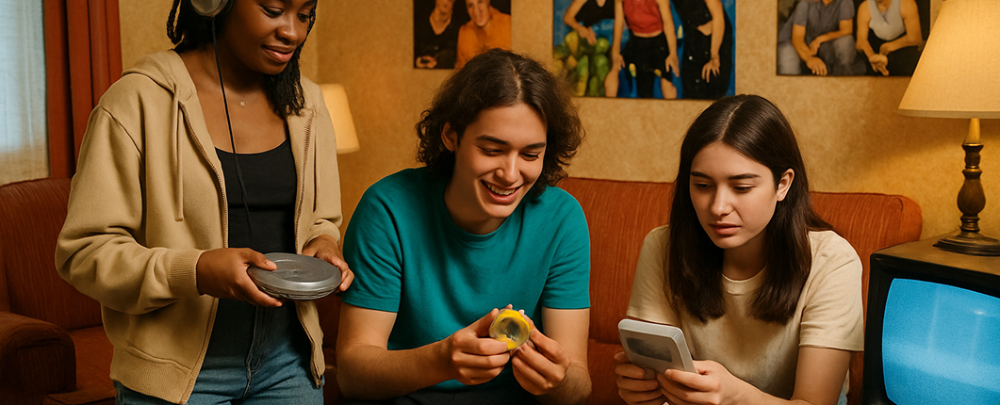
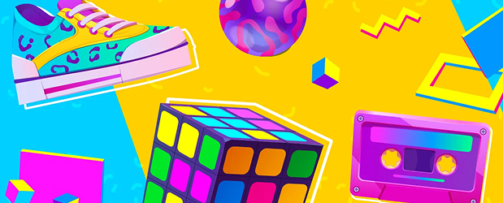
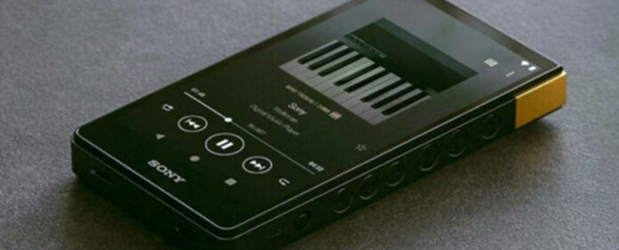
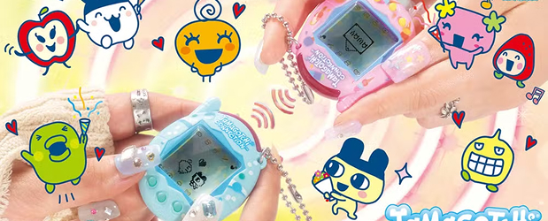
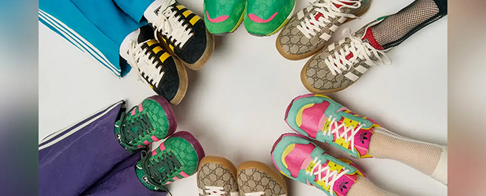

O Eterno Retorno do Design
Em agosto de 2025, enquanto caminhava pelo campus de uma universidade americana, você poderia ser perdoado por pensar que havia entrado em um portal do tempo. Jovens de 18 a 25 anos usando calças cargo, tênis plataforma, camisetas oversized de bandas grunge, carregando Walkmans restaurados e discutindo as virtudes da última temporada de “Friends” no Max. Não, você não viajou de volta para 1995 – você está testemunhando o mais recente capítulo de um fenômeno tão antigo quanto a própria cultura humana: o ciclo da nostalgia.
A Geração Z – nascidos aproximadamente entre 1997 e 2012 – está atualmente liderando um ressurgimento massivo da estética, tecnologia e sensibilidade cultural dos anos 90, uma década que a maioria deles mal experimentou ou sequer viveu. Como destacado em uma recente reportagem do New York Times, essa tendência vai além da moda superficial, refletindo anseios mais profundos e respostas complexas ao mundo digital hiper conectado em que cresceram.
Mas por que isso acontece? Por que cada geração parece destinada a reviver o passado? E o que há de especial na relação da Geração Z com os anos 90 que transformou essa nostalgia em um fenômeno cultural e comercial tão poderoso?
A mecânica dos ciclos de design: A regra dos 30 anos

Historicamente, os ciclos de design e nostalgia seguem um padrão relativamente previsível que muitos especialistas chamam de “a regra dos 30 anos”. Esta teoria sugere que tendências culturais tipicamente ressurgem aproximadamente três décadas após sua popularidade inicial. Nos anos 70, houve um revival dos anos 40. Nos anos 80, vimos um retorno à estética dos anos 50. Os anos 90 revisitaram os anos 60, e os anos 2000 trouxeram de volta elementos dos anos 70.
Este ciclo de 30 anos coincide com o momento em que uma nova geração de criativos – designers, artistas, cineastas, músicos – que cresceram sendo influenciados por uma era particular assumem posições de influência cultural. Eles começam a reinterpretar as referências estéticas de sua infância através de uma lente contemporânea. No entanto, o que torna o atual revival dos anos 90 particularmente interessante é que a maioria dos membros da Geração Z não tem memórias diretas daquela década. Eles estão experimentando uma “nostalgia por procuração” – um fenômeno que tem suas próprias dinâmicas culturais e psicológicas fascinantes.
Por que a geração Z está obcecada com uma década que não viveu?
A Busca por Autenticidade na Era Digital
A Geração Z é a primeira a crescer como verdadeiros nativos digitais, em um mundo de feeds infinitos, algoritmos personalizados e realidades aumentadas. Muitos membros dessa geração expressam um desejo por experiências que pareçam mais tangíveis, autênticas e menos mediadas pela tecnologia.
Os anos 90 representam o último momento antes da revolução digital completa – uma era em que a tecnologia existia, mas não dominava cada aspecto da vida.

Simplicidade tecnológica: O charme dos dispositivos de função única
Enquanto os smartphones modernos funcionam como dispositivos tudo-em-um, há um crescente movimento entre jovens da Geração Z em direção a tecnologias de função única dos anos 90. Câmeras de filme estão vivendo um renascimento massivo. O Walkman da Sony foi reintroduzido com grande sucesso. Até mesmo os Nokia “tijolão” estão sendo adotados como “telefones de desintoxicação digital” por jovens sobrecarregados com notificações.
Como destacado na reportagem do NYT, há algo libertador em usar dispositivos projetados para fazer apenas uma coisa, mas fazê-la bem, sem distrações constantes. Uma jovem de 19 anos é citada dizendo: “Quando estou usando meu Walkman, estou apenas ouvindo música – não estou checando Instagram, recebendo e-mails ou me sentindo pressionada a responder mensagens. É apenas eu e a música, e isso é incrivelmente refrescante.”
O paradoxo da cultura arquivada: Tudo acessível, nada experimentado.
A Geração Z tem acesso sem precedentes ao arquivo completo da cultura popular – praticamente toda música, filme, programa de TV e tendência de moda dos anos 90 está disponível online. Esta hiper-acessibilidade criou uma relação única com o passado, onde décadas anteriores são menos marcos cronológicos e mais paletas estéticas a serem exploradas e combinadas.
Como sugeriu o sociólogo Dr. James Kenton: “Para gerações anteriores, a nostalgia estava intrinsecamente ligada à memória vivida. Para a Geração Z, é mais sobre curadoria de identidade. Eles podem adotar os aspectos dos anos 90 que ressoam com eles, sem o peso emocional de realmente ter vivido aquela era. É uma relação mais fluida e experimental com o passado.”
Como as Marcas Estão Respondendo
As corporações perceberam rapidamente essa tendência e estão capitalizando nela de várias maneiras:

Relançamentos Estratégicos
Marcas como Nintendo, Tamagotchi e Lisa Frank reintroduziram produtos icônicos dos anos 90 com atualizações sutis para o consumidor moderno. A Nintendo, em particular, teve enorme sucesso com versões atualizadas de seus consoles clássicos, que se tornaram itens colecionáveis entre jovens jogadores.

Colaborações Intergeracionais
Empresas estão criando colaborações estratégicas entre ícones dos anos 90 e influenciadores contemporâneos da Geração Z. A Adidas, por exemplo, reviveu sua linha de calçados dos anos 90 em parceria com criadores de conteúdo nascidos após 2000, criando uma ponte cultural entre as gerações.
Além da tendência: O que isso nos diz sobre o futuro do design
O atual fenômeno de nostalgia dos anos 90 não é apenas uma tendência passageira, mas um indicador importante de mudanças mais amplas na relação da sociedade com a tecnologia, autenticidade e experiência.
Vamos conversar?